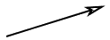
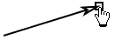
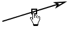
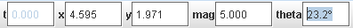

Vektor

Sled vektor lahko predstavlja katerikoli vektor, običajno pa jo uporabljamo za prikaz sile v diagramih sile. To je sled in sila se lahko s časom spreminja (n.pr s številom korakov).
Opomba: Veliko uvodnih poglavij v fiziko vključuje konstantne sile ali sile v posameznem časovnem trenutku. Z izbiro le ene sličice za video izrezek in z uporabo sledi vektorja in vsote vektorjev, lahko s pomočjo programa Tracker grafično modeliramo in analiziramo takšne primere. Video v ozadju je lahko ena sličica videa, navadna slika ali prazen. bel zaslon.
1. Označevanje
korakov

S
kurzorjem v obliki križca kliknemo ob sočasnem pritisku na tipko
SHIFT ta, kjer naj bi bil rep vektorja. S kurzorjem v obliki
ročice vlečemo puščico in označimo en korak vektorja. Za
razlikovanje od vektorjev gibanja so taki vektorji izrisani s krepkimi
črtami.
Namesto z miško lahko označujemo korak vektorja tudi s kombinacijo SHIFT/Enter. To pride v poštev, če je korak vektorja enak prejšnjemu koraku.
Privzeto so sledi tipa vektor vidne. Sledi lahko skrijemo ali skrajšamo z gumbi o sledeh v orodni vrstici.
2. Urejanje
vektorja

Z izbiro katerekoli točke na vektorju prikažemo njegove komponente v orodni vrstici. V ustrezno polje lahko vnesemo želeno vrednost ali pa vrednosti komponent spreminjamo tako, da izberemo in premaknemo puščico vektorja.

Če vlečemo in premikamo center vektorja, se njegove komponente ne bodo spreminjale.
3. Analiza
vektorjev
Ko so osi koordinatnega sistema vidne, lahko vektor z njegovim repom že v bližini izhodišča pripnemo na izhodišče. To je uporabno pri ocenjevanju in prikazovanju njegovih komponent.
Vse vektorje lahko hitro prilepimo na izhodišče s postavko (Repi na izhodišče) v menuju sledi vektor.
4. Povezovanje vektorjev (glej tudi Vsota vektorjev)


Vektorje lahko povežemo od puščic k repu in tako grafično določimo vsoto vektorjev. Vektorje povezujemo tako, da vlečemo en vektor in ga z repom ob puščici drugega spustimo. Spuščeni vektor se bo prilepil na puščico drugega. Tako lahko dodatne vektorje povežemo v verigo.

Opomba: Tracker ne preverja, ali je tako povezovanje množice vektorjev matematično pravilno ali fizikalno smiselno. To je preprosto omogočeno.
Če vlečemo prvega v verigi povezanih vektorjev, se premika celotna veriga kot celota in vektorji ostanejo povezani. Če pa povlečemo katerega od naslednjih vektorjev, se ta odlepi in veriga se pretrga.